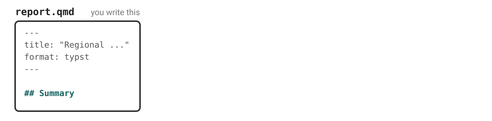
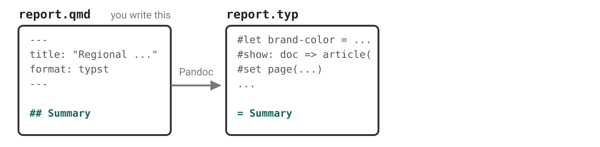
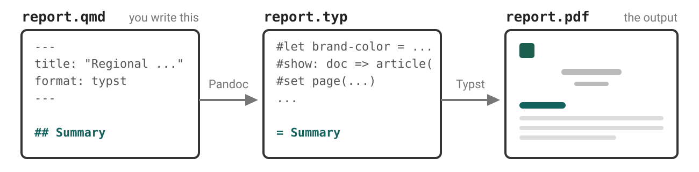
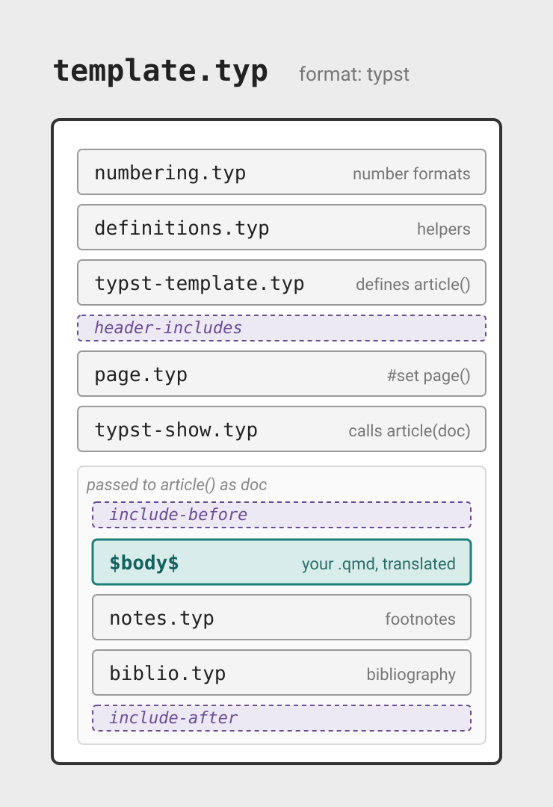
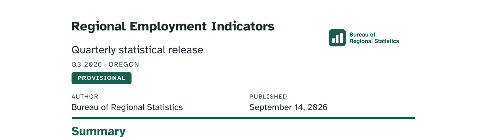

Why Typst matters
Practical Quarto: Patterns, templates, and tooling @ posit::conf(2026)
Case study
The Bureau of Regional Statistics publishes a quarterly release.
Same release, new requirement
The Bureau of Regional Statistics quarterly release. Every one must carry:
- the agency mark
- the reference period and the region
- the release status — Provisional, Revised, or Final
Last module we built all three into an HTML title block. Now it has to be a PDF.
Your turn 1: render it as a PDF
Add
typstas a second format inreport.qmd. Keephtml:Render with Quarto: Preview Format… command and pick Typst.
Render the HTML too. Compare the two formats.
Exercise: 04-typst/01-first-pdf
![The first page of the rendered PDF. The agency logo and wordmark sit small at the top left. Regional Employment Indicators is centred below it in bold, with the subtitle Quarterly statistical release, then Bureau of Regional Statistics and the date 2026-09-14. The Summary section follows, with a sentence naming the status, period and region, a paragraph pointing at Table 1 and a green methodology notes link, a bold line reading All figures in this release are provisional, and an indented quotation about benchmarking. Then an Industry detail section with Table 1, Non-farm payroll employment by sector, and the start of a Notes section.](../images/typst-turn1-pdf.png)
Why Typst?
Already installed.
format: pdfneeds a LaTeX distribution. Typst ships inside Quarto.Faster. Render, look, change, look again.
Uses your brand. Colors, fonts, and the logo, from the same
_brand.yml.
Two ways to reach metadata
| Last module | This module | |
|---|---|---|
| Where you write it | title-block.html, a partial |
report.qmd, the body |
| What you write | $brs-release.status$ |
{{< meta brs-release.status >}} |
| What it is | Pandoc template syntax | a Quarto shortcode |
Pandoc’s template syntax only runs when Pandoc is filling a template.
Quarto writes the Typst
.qmd → .typ → .pdf



Your content translated to Typst
report.typ
= Summary
<summary>
This is a Provisional release covering Oregon for the reference period Q3 2026.
Total employment in the region rose by 4,300 jobs over the quarter, an increase of 0.4%. Sector detail is in #ref(<tbl-sectors>, supplement: [Table]), and the full method is in the #link("https://example.gov/brs/methods")[methodology notes].
#strong[All figures in this release are #emph[provisional].]
#quote(block: true)[
Benchmarking aligns the survey estimates with the annual census of employment.
]Template contributes 431 lines above it…
Template: format: typst

Typst syntax
Text is content
# switches into code
Empty parentheses: a call with no arguments.
Arguments go in the parentheses
Use [] to pass content arguments
Your turn 2: read the Typst
Render, then open
report.typ. Scroll down to= Summary— everything below it is your content.Find a call — it starts with
#.Search for the function in the Typst reference. Say in plain words what it does, and whether any arguments are being passed to it.
Again, with another one.
Exercise: 04-typst/02-read-the-typ
You can nest content and calls
Writing Typst in a .qmd
A raw block passes straight through:
Lands in report.typ untouched. Every other format ignores it.
The release status badge
Set and show rules
Every element has a function
Even if not explicitly called, all layout and styling happens with functions:
| Element | Its function |
|---|---|
| Text | text() |
| Heading | heading() |
| Paragraphs | par() |
| Page | page() |
A set rule changes the default
Adding show scopes it to an element
A show-set rule: the show keyword, a selector, a colon, then a set rule.
.where() narrows the selector
Your .typ is already full of these
Your turn 3: set and show rules
In report.qmd, add a new raw block above the badge, so the rules apply to everything below.
Exercise: 04-typst/03-set-and-show
One answer
Further customization
When a raw block is not enough
| You want | Reach for |
|---|---|
| rules used across documents | include-before: styles.typ |
| a header or footer on every page | override page.typ |
| a different title block | override typst-show.typ, typst-template.typ |
Seed with the defaults, hand to an agent
I've added page.typ, typst-show.typ and typst-template.typ,
unedited copies of Quarto's Typst partials, already registered in report.qmd.
Edit the partials to rebuild the title block:
title and subtitle alongside a right aligned the brand logo,
the reference period and region,
then the release status as a badge. With a little iteration…

Example: 04-typst/05-title-block
Wrapping up
When LaTeX is still right
- an existing journal template — different language, no path across
- an established math workflow built on LaTeX packages
- HTML, when screen-reader users are a primary audience
Free with Typst
gttables. Structure and CSS styling both translate. Stay in R.pdf-standard: ua-1. One line, and a tagged PDF.- Page layout.
papersize,margin,page-numbering,columns.
Questions?
Resources
Reading .typ in your editor
Tinymist Typst — syntax highlighting and completion for .typ files.
Where the Typst partials live
Source for a version: quarto-cli/src/resources/formats/typst/pandoc/quarto